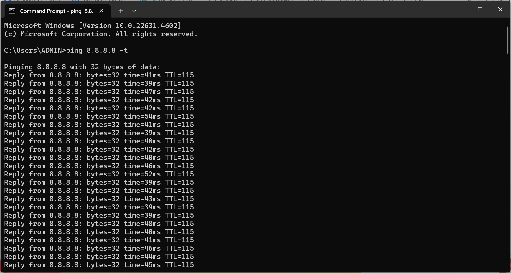

UltraViewer Connection Timeout Fix (2025) – Full Troubleshooting Guide
Are you experiencing frustrating UltraViewer connection timeout issues during crucial remote sessions? You're not alone. These connection disruptions typically occur due to network instability, firewall restrictions, or ISP limitations, and can severely impact your remote work productivity.
When UltraViewer suddenly disconnects, your workflow gets interrupted, important tasks get delayed, and remote collaboration efficiency plummets. In this comprehensive guide, we'll analyze the root causes of UltraViewer connection problems and provide proven solutions to fix them, ensuring you enjoy a smooth and uninterrupted remote access experience.
5 Causes & Fixes for UltraViewer Connection Timeout (2025)
1. Fix UltraViewer Connection Timeout Due to Network Issues
One of the primary culprits behind UltraViewer connection timeout problems is a weak or unstable internet connection.
How to Fix Network Instability:
-
Perform a Ping Test: Open Command Prompt, type
ping 8.8.8.8 -tand press Enter. Monitor this window while working to check for high latency or request timeouts. Ideal ping values should range between 1-100 ms and remain consistent. -
Restart Your Router: Power off your modem and router for approximately 30 seconds, then restart them to refresh the connection.
-
Switch to a Wired Connection: If you're using Wi-Fi, try connecting via an Ethernet cable for a more stable and reliable connection.
-
Reduce Bandwidth Usage: Close unnecessary applications and devices consuming bandwidth, such as video streaming services or large downloads running in the background.

2. Firewall and Security Software Restrictions
Various firewalls and antivirus programs may block UltraViewer's connection attempts, leading to timeout issues.
How to Configure Security Settings:
-
Add UltraViewer as an Exception: Navigate to Windows Security > Firewall & network protection > Allow an app through the firewall, and ensure UltraViewer is permitted on both private and public networks.
-
Temporarily Disable Security Software: Turn off your antivirus and firewall temporarily, then check if UltraViewer connects successfully. If disabling security software resolves the issue, adjust the settings to allow UltraViewer while maintaining system protection.
-
Check Port Configurations: Verify that TCP/UDP ports used by UltraViewer are not blocked by your network settings.
3. UltraViewer Connection Timeout: Fix VPN & ISP Restrictions
Certain VPNs, proxies, or ISPs may interfere with remote connections, resulting in UltraViewer connection timeout problems.
How to Bypass Connection Restrictions:
-
Disable VPN or Proxy: If you're using a VPN service, try disconnecting it and connecting directly to UltraViewer. Some VPNs can introduce additional latency or routing issues.
-
Contact Your ISP: If the issue persists across different networks, your Internet Service Provider might be restricting remote desktop connections. Request assistance or inquire about potential network throttling policies.
-
Use Alternative DNS Servers: Switch to public DNS servers like Google DNS (8.8.8.8, 8.8.4.4) or Cloudflare DNS (1.1.1.1) for potentially improved connectivity and DNS resolution.
4. Timeout Settings and Reverse Route Method
UltraViewer may disconnect due to inactivity timers or inefficient connection routing.
How to Optimize Connection Settings:
-
Adjust System Timeout Settings: Ensure your computer doesn't enter sleep mode or hibernation during remote sessions by modifying power settings in Windows Control Panel.
-
Use the Reverse Route Method: Click the small down arrow next to the Connect button and select "Reverse Route" to establish a more stable connection. This method forces the connection to take an alternative path, potentially bypassing network restrictions or routing inefficiencies.

5. Testing on Alternative Networks and Devices
If UltraViewer connection timeout issues persist, testing on different networks and devices can help identify the root cause.
Troubleshooting Through Elimination:
-
Use a Different Network: Connect using a mobile hotspot, another Wi-Fi network, or a wired connection to determine if the issue is specific to your primary network.
-
Try Another Device: Install UltraViewer on another computer or laptop and test if the connection issues continue, which can help identify if the problem is device-specific.
-
Test Remote PC Accessibility: Ask the remote user to check their network stability and perform a ping test on their end, as the issue could originate from their connection.
Advanced Solution: Fix UltraViewer Connection Timeout by Upgrading to Premium
If you've tried all troubleshooting steps but still experience UltraViewer connection timeout issues, upgrading to UltraViewer Premium could be the best solution. The premium version is designed for users who need faster, more stable, and reliable remote access, especially for business and professional use.
Why Choose UltraViewer Premium?
- Faster Connection Speeds – Get priority access to UltraViewer’s high-performance servers, reducing latency and ensuring a smooth remote session.
- More Stable & Secure Connectivity – Say goodbye to unexpected disconnections with improved connection algorithms that maintain stability even in less-than-ideal network conditions.
- Enhanced File Transfer Capabilities – Transfer large files up to 8GB per file, making remote work and collaboration more seamless.
- Priority Customer Support – Get faster responses from UltraViewer’s support team, helping you troubleshoot issues quickly without delays.
- No Session Interruptions – Enjoy longer and uninterrupted remote sessions, with fewer disconnections due to inactivity or timeout settings.
Free vs. Premium: Which One is Right for You?
| Feature | Free Version | Premium Version |
|---|---|---|
| Connection Speed | Standard | Faster, priority servers |
| Stability | May disconnect | More stable, fewer timeouts |
| File Transfer Limit | < 2GB per file | Up to 8GB per file |
| Session Duration | Limited | Extended sessions, no forced timeouts |
| Technical Support | Standard | Priority support |
🚀 Upgrade to UltraViewer Premium Today!
If frequent disconnections, slow speeds, or file transfer limits are disrupting your remote work, UltraViewer Premium provides the stability and performance you need.
✅ Upgrade Now for an uninterrupted remote access experience!
Frequently Asked Questions (FAQ)
Why does UltraViewer disconnect even when my internet connection seems stable?
Beyond network issues, security software or firewall settings might be interfering with the connection. Check your security settings and add UltraViewer to your allowlist of permitted applications.
Which version of UltraViewer is most stable for preventing connection timeouts?
The latest version of UltraViewer (6.6) typically includes bug fixes and stability improvements. Always ensure you're running the most current version for optimal connection stability.
Conclusion
Resolving UltraViewer connection timeout issues requires investigating multiple factors, from network stability and security configurations to VPN settings and ISP restrictions. By applying the solutions recommended in this guide, you can significantly improve your UltraViewer experience and ensure your remote sessions proceed smoothly without interruptions.
Ready to experience seamless remote access? Download UltraViewer now or upgrade to Premium for the best performance!
✅ Download UltraViewer Free
✅ Upgrade to UltraViewer Premium


Write comments (Cancel Reply)